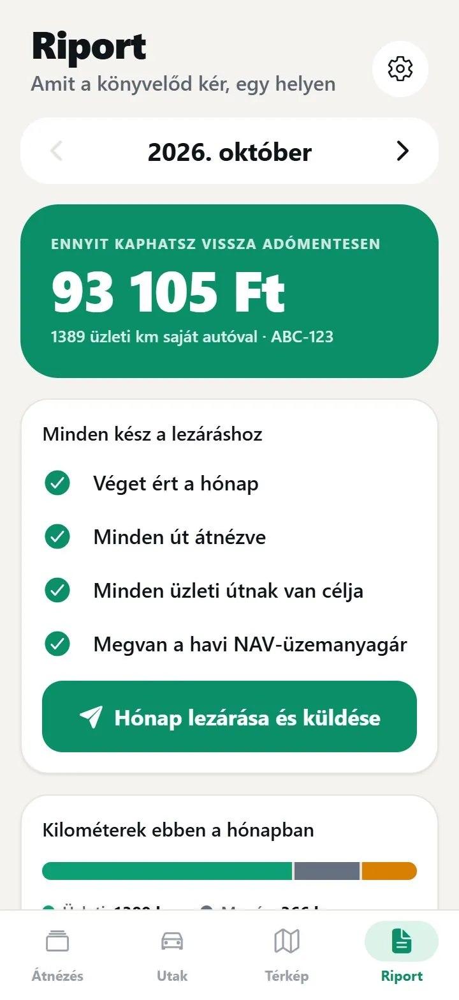
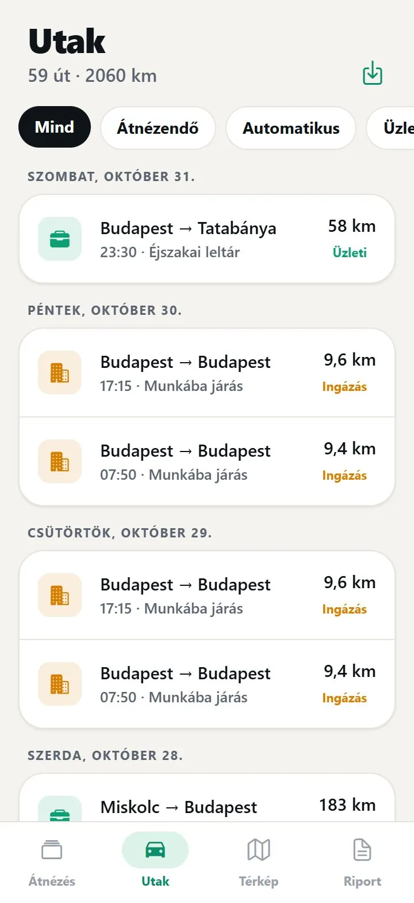
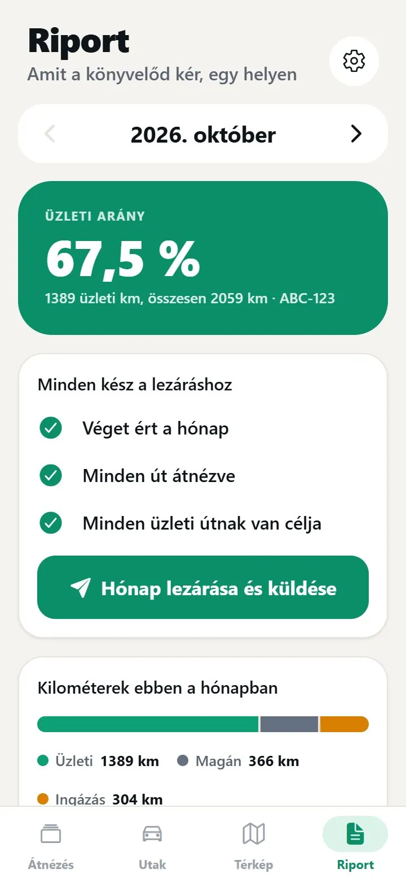

NAV által elfogadott útnyilvántartó app?
A NAV nem appot fogad el. Hiánytalan naplót.
Útnyilvántartó programra nincs NAV-pecsét: a NAV azt nézi, benne van-e a naplóban minden, amit előír, és összeillenek-e az adatok. A Trippo magától rögzít, és addig nem enged lezárni egy hónapot, amíg bármi hiányzik vagy ellentmond egymásnak.
A rögzítés és a besorolás ingyenes. Pro: 14 nap ingyen, utána 1 990 Ft/hó. iPhone-ra.



Hiányos hónap nem megy ki
Lezárás előtt a Trippo átnézi a hónapot. Amit talál, pirossal mutatja, és egy koppintással odaugrasz a hibás úthoz.
- Két út, amely időben átfedi egymást
- 150 km/h fölötti átlagsebesség: rossz a km vagy az idő
- A két pont légvonalánál rövidebb km
- Üzleti út cél vagy partner nélkül
- Hiányzó év eleji vagy év végi km-óra állás
Lezárva, nyomtalanul nem átírható
A lezárt hónapot ellenőrző kód védi, minden változás naplózva van. Ha javítani kell, a hónapot újranyitod, és ez is látszik. Ez az, amit egy kézi Excel nem tud megmutatni.
- PDF és Excel a könyvelőnek, útnyilvántartással és kiküldetési rendelvénnyel
- A havi NAV-üzemanyagárral és a hivatalos normával számolva
- Könyvelői portál: minden ügyfél lezárt hónapja egy helyen

És a „NAV által elfogadott” felirat?
Útnyilvántartó programra nincs hivatalos NAV-jóváhagyás vagy tanúsítvány. Mi ezért nem pecsétet ígérünk, hanem hiánytalan, ellentmondásmentes és nyomtalanul nem átírható naplót. A NAV ezt nézi.
Szólunk, ha kész
Induláskor írunk, havonta elküldjük az új NAV-üzemanyagárat, és ritkán az újdonságokat.
Gyakori kérdések
Van NAV által elfogadott útnyilvántartó app?
Hivatalos NAV-jóváhagyás útnyilvántartó programra nincs. A NAV a napló tartalmát nézi: ha minden kötelező adat benne van és az adatok hihetők, a nyilvántartás megfelel, akármivel készült.
Elfogadja a NAV az appból készült útnyilvántartást?
A NAV a tartalmat nézi, nem a formát. A Trippo addig nem zárja le a hónapot, amíg a kötelező adatok közül valami hiányzik, vagy az utak ellentmondanak egymásnak. Az adatok valódiságáért te felelsz.
Mit kap a könyvelőm?
A lezárt hónapot PDF-ben és Excelben: az útnyilvántartást és saját autónál a kiküldetési rendelvényt, ellenőrző kóddal. A könyvelői portálon az összes ügyfele lezárt hónapját egy helyen látja.
Elég, ha elektronikusan őrzöm meg?
A megőrzési idő a formától nem függ. Az a lényeg, hogy a teljes idő alatt elővehető és olvasható legyen: a 2026-os naplót 2032. december 31-ig.
Az adatok valódiságáért te felelsz: lezárás előtt nézd át az utakat. Forrás: NAV 8. információs füzet (2026), 3.1.1. és 3.1.2. pont; Szja tv. 5. számú melléklet II. 7. pont. Ez az oldal általános tájékoztató, nem adótanácsadás.